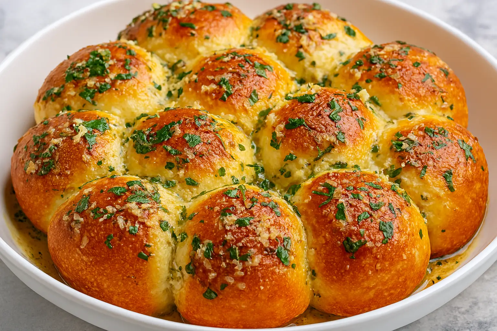

Cheesy Garlic Butter Rolls

Description:
These cheesy garlic butter rolls begin with refrigerated crescent roll sheets, so there's no rise time. Filled with garlic butter, Colby Jack cheese, and creamy mozzarella, they bake up tall and golden, and are ready in 45 minutes.
Ingredients:
Original recipe (1X) yields 16 servings
- 1/2 cup butter,softened, divided
- 4 cloves garlic, pressed
- 2 tablespoons finely chopped parsley
- 2 cans crescent roll sheets, such as Pillsbury
- 1 cup shredded Colby-Jack cheese
- 1/2 cup shredded creamy mozzarella cheese
Steps:
- Preheat the oven to 350 degrees F (180 degrees C). Grease a 9x9-inch baking dish or a sheet pan.
- Combine 1/4 cup butter, garlic, and parsley in a small bowl to form a smooth paste.
- Roll one sheet of crescent dough out onto the counter. Spread half of the garlic butter mixture evenly on dough. Sprinkle half of the Colby-Jack and half of the mozzarella cheese evenly over buttered dough.
- With the long edge of the dough facing you, use a pizza cutter to cut the sheet crosswise into 8 even strips. Starting at one short end, roll each strip up into a pinwheel and place in the prepared baking dish (touching for soft sides) or 2 inches apart on the baking sheet for crisp edges.
- Repeat with second sheet of dough, using remaining garlic butter and cheese.
- Bake until golden and puffed, 35 to 40 minutes for a baking dish, or 13 to 15 minutes for a baking sheet.
- Melt the remaining ¼ cup butter and brush it over the warm rolls for a glossy finish. Serve warm.
Home